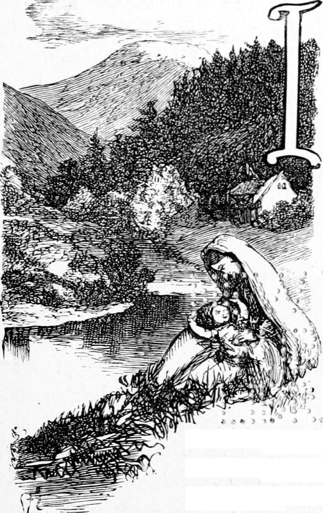

I do not intend to carry my story one month beyond the hour when I saw that my boyhood was gone and my youth arrived; a period determined to some by the first tail-coat, to me by a different sign. My reason for wishing to tell this first portion of my history is, that when I look back upon it, it seems to me not only so pleasant, but so full of meaning, that, if I can only tell it right, it must prove rather pleasant and not quite unmeaning to those who will read it. It will prove a very poor story to such as care only for stirring adventures, and like them all the better for a pretty strong infusion of the impossible; but those to whom their own history is interesting—to whom, young as they may be, it is a pleasant thing to be in the world—will not, I think, find the experience of a boy born in a very different position from that of most of them, yet as much a boy as any of them, wearisome because ordinary.
If I did not mention that I, Ranald Bannerman, am a Scotchman, I should be found out before long by the kind of thing I have to tell; for although England and Scotland are in all essentials one, there are such differences between them that one could tell at once, on opening his eyes, if he had been carried out of the one into the other during the night. I do not mean he might not be puzzled, but except there was an intention to puzzle him by a skilful selection of place, the very air, the very colours would tell him; or if he kept his eyes shut, his ears would tell him without his eyes. But I will not offend fastidious ears with any syllable of my rougher tongue. I will tell my story in English, and neither part of the country will like it the worse for that.
I will clear the way for it by mentioning that my father was the clergyman of a country parish in the north of Scotland—a humble position, involving plain living and plain ways altogether. There was a glebe or church-farm attached to the manse or clergyman’s house, and my father rented a small farm besides, for he needed all he could make by farming to supplement the smallness of the living. My mother was an invalid as far back as I can remember. We were four boys, and had no sister. But I must begin at the beginning, that is, as far back as it is possible for me to begin.